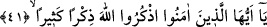

yapılmasını emretti. İşte sihirden zarar gören herkes için hacamat yaptırmak, hikmet
gereği ve en güzel tedavi yoludur. Din ve îmandan nasîbi olmayan kimse bu kurtuluşu,
içinden çıkılmaz bulur.”
Bir hadîste şöyle buyrulmuştur: “Baştan hacamat yaptırmak, delilik, baş dönmesi,
cüzzam, abraşlık, uyuşukluk, diş ağrısı, göz kararması gibi yedi hastalığa
şifâdır.”[236]
Başın tam ortasından, yine iki omuz arasından hacamat yaptırmak çok faydalıdır. Ense
çukurundan hacamat yaptırmak mekruhtur. Çünkü bu unutkanlık yapar. ‘Sıcak ülkelerde
hacamat yaptırmak normal kan aldırmaktan daha faydalıdır.’ demişlerdir.
Rivâyete göre Peygamberimiz (s.a.) baş ağrısı şikâyetiyle gelen herkese: “Hacemat
yaptır” buyurmuştur. Yine ayaklarından şikâyet edenlere de; “Kına yak.” buyurmuştur.
[237]
Hacamat için en uygun günler, pazar ve pazartesidir. Bazı rivâyetlerde pazar günü
hacamat yasaklanmıştır. Bazıları salıyı tercih etmiş, bazıları ise mekruh saymıştır.
Kendisine kanın galebe etmesi dışında cumartesi ve çarşamba günleri mekruhtur. En iyi
zamanı bahar mevsiminde (kamerî) ayın yarısından sonra ayın on yedi, on dokuz ve
yirmi birinci günleridir. O halde en uygunu, ayın üçüncü dörtte birinde yapılmasıdır.
Çünkü bu vakit kanın kaynadığı vakittir. Kamerî ayın son üç gününde hacamat yaptırmak
mekruhtur.
Yazın çok sıcak, kışın çok soğuk günlerinde hacamat yaptırmak doğru değildir.
Hacamat için en iyi vakitler, güneşin doğuşundan kuşluk vaktine kadar olan zamandır.
Aç karnına hacamat yaptırmak müstehabdır. Çünkü bu, şifâ ve bereket, akıl ve hâfızanın
artmasına sebeptir. Tok karnına hacamat hastalık yapar. Ancak kişi çok halsiz ise hafif
bir şey atıştırıp ardından hacamat yaptırabilir. Hacamat yaptırmak isteyen kimsenin
hacamattan bir gün önce ve bir gün sonra hanımına yaklaşmaması uygun görülmüştür.
Yine kişi hacamat yaptırdığı gün hamama girmemelidir.
Hacamat yaptıran yahut kan aldıran kişi ardından tuzlu yememelidir. Çünkü bu durum
vücutta bir takım yara bere yahut uyuz illetine sebep olur. Hacamat yaptıran o gün baş
eti, süt ve süt ürünleri yememelidir. Hacamatın ardından bedenini rahatlatmak için sirke
alınması müstehabdır. Sonra bir miktar çorba içer ve yiyebilirse biraz tatlı yer. Nitekim
Bostânü’l-ârifîn’de böyle geçmektedir. Şifa veren ve her şeye kâfî olan Allah’tır.
41. Ey îman edenler! Allâh’ı çokça zikredin.
“Ey îman edenler! Allâh’ı” lâyıkı vechile tehlîl, tahmîd, tekbir ve benzerleriyle gece-
gündüz, yaz-kış gibi bütün zamanlarda; kara-deniz, ova-dağ gibi bütün mekanlarda;
hazar-sefer, sağlık-hastalık, gizli-açık, ayakta, oturarak ve yan üstü yatarak bütün